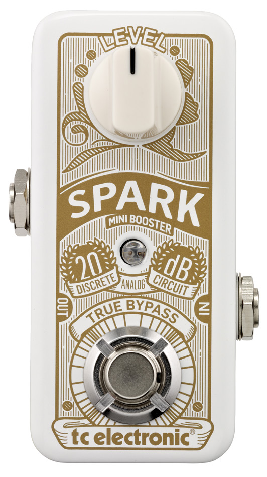
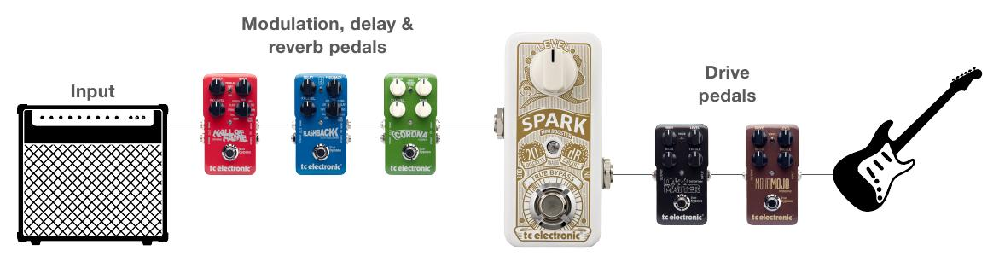
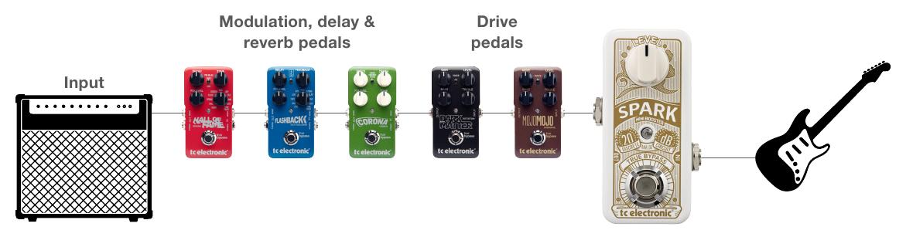
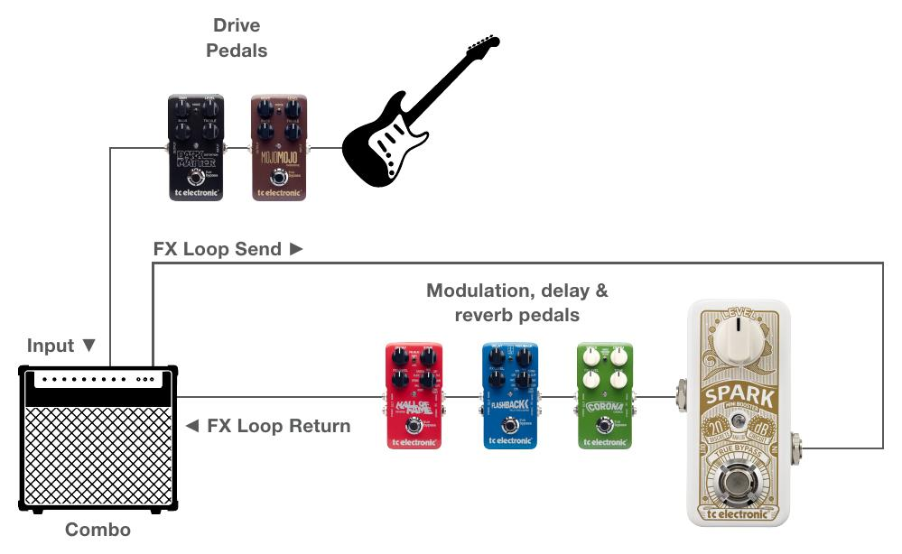

TC Electronic Spark Mini Booster

Important Safety Instructions
- Read these instructions.
- Keep these instructions.
- Heed all warnings.
- Follow all instructions.
- Do not use this apparatus near water.
- Clean only with dry cloth.
- Do not block any ventilation openings. Install in accordance with the manufacturer’s instructions.
- Do not install near any heat sources such as radiators, heat registers, stoves, or other apparatus (including amplifiers) that produce heat.
- Do not defeat the safety purpose of the polarized or grounding-type plug. A polarized plug has two blades with one wider than the other. A grounding type plug has two blades and a third grounding prong. The wide blade or the third prong are provided for your safety. If the provided plug does not fit into your outlet, consult an electrician for replacement of the obsolete outlet.
- Protect the power cord from being walked on or pinched particularly at plugs, convenience receptacles, and the point where they exit from the apparatus.
- Only use attachments/accessories specified by the manufacturer.
- Use only with the cart, stand, tripod, bracket, or table specified by the manufacturer, or sold with the apparatus. When a cart is used, use caution when moving the cart/apparatus combination to avoid injury from tip-over.
- Unplug this apparatus during lightning storms or when unused for long periods of time.
- Refer all servicing to qualified service personnel. Servicing is required when the apparatus has been damaged in any way, such as power-supply cord or plug is damaged, liquid has been spilled or objects have fallen into the apparatus, the apparatus has been exposed to rain or moisture, does not operate normally, or has been dropped.
Warning
Do not expose this equipment to dripping or splashing and ensure that no objects filled with liquids, such as vases, are placed on the equipment.
Do not install this device in a confined space.
Service
All service must be performed by qualified personnel.
Caution
You are cautioned that any change or modifications not expressly approved in this manual could void your authority to operate this device.
EMC / EMI
Electromagnetic compatibility / Electromagnetic interference
This equipment has been tested and found to comply with the limits for a Class B Digital device, pursuant to part 15 of the FCC rules.
These limits are designed to provide reasonable protection against harmful interference in residential installations. This equipment generates, uses and can radiate radio frequency energy and, if not installed and used in accordance with the instructions, may cause harmful interference to radio communications. However, there is no guarantee that interference will not occur in a particular installation. If this equipment does cause harmful interference to radio or television reception, which can be determined by turning the equipment off and on, the user is encouraged to try to correct the interference by one or more of the following measures:
- Reorient or relocate the receiving antenna.
- Increase the separation between the equipment and receiver.
- Connect the equipment into an outlet on a circuit different from that to which the receiver is connected.
- Consult the dealer or an experienced radio / TV technician for help.
For customers in Canada
This Class B digital apparatus complies with Canadian ICES-003.
Cet appareil numérique de la classe B est conforme à la norme NMB-003 du Canada.
About this manual
This manual will help you learn understanding and operating your TC product.
To get the most from this manual, please read it from start to finish, or you may miss important information.
This manual is only available as a PDF download from the TC Electronic website.
Of course, you can print this manual, but we encourage you to use the PDF version, which has both internal and external navigation links. For example, clicking the logo in the upper left corner of each page will take you back to the table of contents.
To download the most current version of this manual, visit
tcelectronic.com/support/manuals/
Enjoy your TC product!
Introduction
“Size matters not. Look at me. Judge me by my size, do you?”
Yoda (“Star Wars: Episode V – The Empire Strikes Back”)
Congratulations on your purchase of TC Electronic’s amazing Spark Mini Booster!
Never judge a book by its cover – or a booster pedal by its size. Spark Mini Booster was designed by musicians for musicians to give you an amazing extra tool for your musical tool box. It’s an extremely versatile pedal that will help you get better sounds.
The possibilities with Spark Mini Booster are virtually endless:
- Leave it on all the time,
- punch it in from time to time when you need a volume boost or
- put it in front of your favorite overdrive / distortion pedal to add more tonal options to your existing pedal board.
The choice is yours!
Ready for PrimeTime?
PrimeTime™ is a radical new feature that will excite guitarists around the globe. Spark Mini Booster instantly understands whether you want the pedal to be permanently on when you hit the footswitch, or just for as long as you hold the footswitch down. Which totally rocks for both “always-on” and “emphasizing passages” situations.
Setup
Ready…
The Spark Mini Booster box should contain the following items:
- 1 Spark Mini Booster pedal
- 2 rubber feet for “non-velcro” pedalboard mounting
- 1 TC Electronic sticker
- 1 leaflet about TC’s guitar FX product range.
Inspect all items for signs of transit damage. In the unlikely event of transit damage, inform the carrier and supplier.
If damage has occurred, keep all packaging as it can be used as evidence of excessive handling force.
Set…
- Connect a 9 V power supply with the following symbol to the DC input socket of Spark Mini Booster.
Note: Spark Mini Booster does not come with a power supply.
- Plug the power supply into a power outlet.
Note: Please note that Spark Mini Booster has no battery compartment. A conventional power supply is required for operating this product.
- Connect your instrument to the INPUT jack on the right side of the pedal using a ¼“ jack cable.
- Connect the OUTPUT jack on the left side of the pedal to your amplifier using a ¼“ jack cable.
Play!
Inputs, output, controls
1. Power input
This is a standard 5.5 / 2.1 mm DC plug (centre = negative). To power up Spark Mini Booster, connect a power supply to its power input socket. Spark Mini Booster requires a 9 V power supply providing 40 mA or more (not supplied).
To minimize hum, use a power supply with isolated outputs.
2. Audio input
This is a standard ¼“ input jack (mono / TS).
Connect your guitar here using a regular ¼“ mono cable.
For other setups, see the “Setup examples” section of this manual.
3. Audio output
This is a standard ¼“ output jack (mono / TS).
Connect this jack to your amplifier using a regular ¼“ mono cable.
For other setups, see the “Setup examples” section of this manual.
4. Level knob
Use this knob to control the level change when the booster is enabled.
Minimum setting will leave the level of your signal unchanged while the maximum setting will give you 20 dBs of boost.
5. Footswitch
Using the footswitch as a standard on / off switch
To turn the pedal on, tap the pedal’s footswitch briefly. To turn the pedal off, tap the footswitch again. This works as with any other pedal on your board.
PrimeTime
Use the PrimeTime feature for brief solos and licks that last only for a few seconds.
To engage PrimeTime, hold down the pedal’s footswitch. To disengage, release the footswitch.
During PrimeTime, boost will be on. As soon as you release the footswitch, boost will turn off again.
Working with a booster: setup examples
Spark Mini Booster is an awesome and versatile tool that can be used in more ways than just one.
- Punch it in from time to time when you need a volume boost.
- Punch it in from time to time when you need a gain boost.
- Leave it on all the time to get the best out of your tube amp.
Understanding the difference between scenarios 1 and 2 is essential when working with Spark Mini Booster.
When playing with a distortion pedal or an overdriven amp, you know how turning down the volume knob on your guitar cleans up your guitar sound?
Well – guess what happens if you do the opposite and turn up your signal even more with the booster? Right: more drive is what happens!
Refer to whichever scenario fits your requirements:
“I want a volume boost!”
Awesome! Then you want to place Spark Mini Booster after your distortion pedal(s).
If you use pedals for your distortion sounds, then you will want to place your Spark Mini Booster directly after those pedals.
If you use the distortion of your amplifier, then you’ll need to place Spark Mini Booster in the FX loop of your amp – otherwise you’ll end up with a gain boost as explained in the following section.
“I want a gain boost!”
Rock on! Place Spark Mini Booster before your drive pedals or distorting amp to use it as an extra gain switch for increased gain and sustain. If you set up Spark Mini Booster this way, you can use it to lift the volume of your clean sound when drive is disengaged. In other words: If used correctly, this can transform an awesome sounding single-channel amp into a ridiculously awesome sounding two-channel amp!
“Wait – there’s more!?” “Yep. Always on!”
In many configurations, driving your amp a bit harder can give you better tone. So try leaving Spark Mini Booster on all the time – and you might find yourself addicted and wanting an extra Spark Mini Booster…
Setup examples
Using Spark Mini Booster as a volume booster

Using Spark Mini Booster as a gain booster

Using Spark Mini Booster in an FX loop

The sound of silence: True Bypass
Here at TC, we have a simply philosophy: When you are using one of our products, you should hear something great – and if you don’t, you shouldn’t hear it at all. This is why this pedal sports True Bypass. When it is bypassed, it is really off and has zero influence on your tone, resulting in optimum clarity and zero loss of high-end.
Frequently asked questions
“What are the input / output impedance values for Spark Mini Booster?”
Input Impedance is 1 MΩ. Output Impedance is 100 Ω.
“Is Spark Mini Booster analog or digital?”
The entire signal path of Spark Mini Booster is 100 % analog.
“Should I place my Spark Booster in front of the amp, or is it better to run it in the amp’s FX loop?”
The placement really depends on what you are looking for. If you place it in front of the amp, the Spark Booster will boost the pre-amp signal in your amp and create a more overdriven sound. If you put it in the loop, you will boost the volume of your amp as the pedal will be placed after the pre-amp section. Check out the section of this manual called Working with a booster / Setup examples.
“Does Spark Mini Booster have balanced or unbalanced input / output?”
Spark Mini Booster has unbalanced I / Os. Use cables with TS jack – i.e., standard instrument cables.
Technical Specifications
- Maximum Setting: 20 dB
- Minimum Setting: 0 dB boost (unity gain)
- Bypass mode: True Bypass
- Signal Circuitry: 100 % analog
- Dimensions (Width x Depth x Height): 48 x 48 x 93 mm / 1.9 x 1.9 x 3.7“
- Input Connector Type: Standard ¼“ jack – mono / TS
- Output Connector Type: Standard ¼“ jack – mono / TS
- Power Input: Standard 9 V DC, centre negative > 40 mA (not supplied)
Due to continuous development, these specifications are subject to change without notice.
Controls
- Level Knob: Amount of boost
- Switch: Boost On / off / PrimeTime
- PrimeTime: Holding down the footswitch for more than one second will activate PrimeTime for boosting essential passages. The boost will disengage when you release the footswitch.
- Input Impedance: 1 MΩ
- Output Impedance: 100 Ω
Getting support
If you still have questions about the product after reading this manual, please get in touch with TC Support: